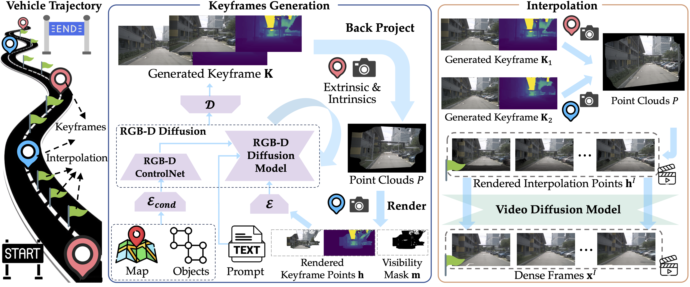
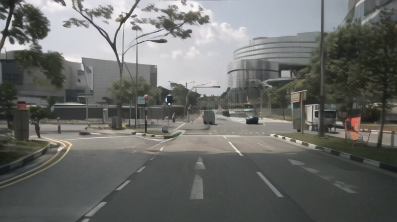
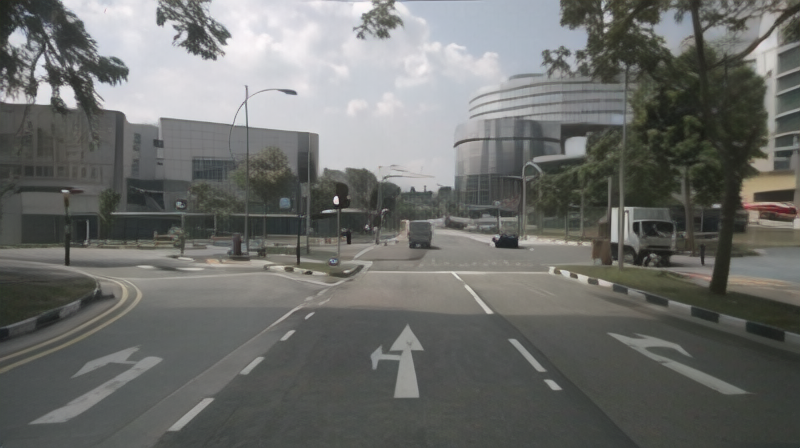
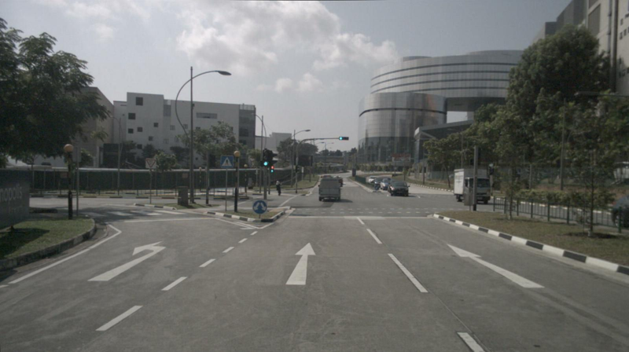

This paper proposes AutoScape, a long-horizon driving scene generation framework. At its core is a novel RGB-D diffusion model that iteratively generates sparse, geometrically consistent keyframes, serving as reliable anchors for the scene's appearance and geometry. To maintain long-range geometric consistency, the model 1) jointly handles image and depth in a shared latent space, 2) explicitly conditions on the existing scene geometry (i.e., rendered point clouds) from previously generated keyframes, and 3) steers the sampling process with a warp-consistent guidance. Given high-quality RGB-D keyframes, a video diffusion model then interpolates between them to produce dense and coherent video frames. AutoScape generates realistic and geometrically consistent driving videos of over 20 seconds, improving the long-horizon FID and FVD scores over the prior state-of-the-art by 48.6% and 43.0%, respectively.

Input: rendered point clouds from two consecutive keyframes generated by RGB-D diffusion
Output: refined outputs from a video diffusion model conditioned on the rendered point clouds
Keyframe generation results with and without our warp-consistent guidance (WCG).



@article{Chen2025autoscape,
author = {Chen, Jiacheng and Jiang, Ziyu and Liang, Mingfu and Zhuang, Bingbing and Su, Jong-Chyi and Garg, Sparsh and Wu, Ying and Chandraker, Manmohan},
title = {AutoScape: Geometry-Consistent Long-Horizon Scene Generation},
journal = {arXiv preprint arXiv:25xx.xxxx},
year = {2025},
}